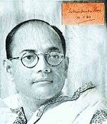
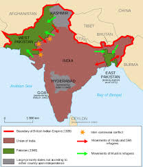
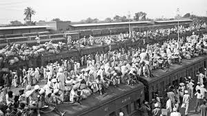

Azad Hind Fauj (Indian National Army)
The entry of India into the war was strongly opposed by Subhas Chandra Bose, who had been elected President of the Congress in 1938 and 1939, but later resigned due to differences in opinion with Gandhi. After resignation he formed his own wing separated from the mainstream congress leadership known as Forward bloc which was the centre of ex-congressmen with socialist views; however he remained emotionally attached with him for the remainder of his life. Bose then founded the All India Forward Bloc. In 1940, a year after war broke out, the British had put Bose under house arrest in Calcutta. However, he escaped and made his way through Afghanistan to Nazi Germany to seek Hitler and Mussolini's help for raising an army to fight the British. The Free India Legion comprising Erwin Rommel's Indian POWs was formed. However, in light of Germany's changing fortunes, a German land invasion of India became untenable and Hitler advised Bose to go to Japan and arranged for a submarine. Bose was ferried to Japanese Southeast Asia, where he formed the Azad Hind Government, a Provisional Free Indian Government in exile, and reorganised the Indian National Army composed of Indian POWs and volunteering Indian expatriates in South-East Asia, with the help of the Japanese. Its aim was to reach India as a fighting force that would build on public resentment to inspire revolts among Indian soldiers to defeat the British raj. The INA was to see action against the allies, including the British Indian Army, in the forests of Arakan, Burma and in Assam, laying siege on Imphal and Kohima with the Japanese 15th Army. During the war, the Andaman and Nicobar islands were captured by the Japanese and handed over by them to the INA.The INA failed owing to disrupted logistics, poor supplies from the Japanese, and lack of training. It surrendered unconditionally to the British in Singapore in 1945. Bose, however, attempted to escape to Japanese-held Manchuria in an attempt to escape to the Soviet Union, marking the end of the entire Azad Hind movement.
Quit India Movement
The Quit India Movement (Bharat Chhodo Andolan) or the August Movement was a civil disobedience movement in India which
commenced on 8 August 1942 in response to Gandhi's call for immediate self-rule by Indians and against sending Indians to World War II. He asked all teachers to leave
their schools, and other Indians to leave their respective jobs and take part in this movement. Due to Gandhi's political influence, his request was followed by a
massive proportion of the population. In addition, the INC led the Quit India Movement to demand the British to leave India and to transfer the political power to INC.
During the movement, Gandhi and his followers continued to use non-violence against British rule. This movement was where Gandhi gave his famous message,
"Do or Die!", and this message spread towards the Indian community. In addition, this movement was addressed directly to women as "disciplined soldiers of Indian
freedom" and they had to keep the war for independence to go on (against British rule).
Overall, the Quit India Movement turned out to be not very successful and only lasted until 1943. It drew away from Gandhi's tactic of non-violence; it eventually
became a rebellious act without any real leader.
was a civil disobedience movement in India which
commenced on 8 August 1942 in response to Gandhi's call for immediate self-rule by Indians and against sending Indians to World War II. He asked all teachers to leave
their schools, and other Indians to leave their respective jobs and take part in this movement. Due to Gandhi's political influence, his request was followed by a
massive proportion of the population. In addition, the INC led the Quit India Movement to demand the British to leave India and to transfer the political power to INC.
During the movement, Gandhi and his followers continued to use non-violence against British rule. This movement was where Gandhi gave his famous message,
"Do or Die!", and this message spread towards the Indian community. In addition, this movement was addressed directly to women as "disciplined soldiers of Indian
freedom" and they had to keep the war for independence to go on (against British rule).
Overall, the Quit India Movement turned out to be not very successful and only lasted until 1943. It drew away from Gandhi's tactic of non-violence; it eventually
became a rebellious act without any real leader.
Sovereignty and Partition of India
On 3 June 1947, Viscount Louis Mountbatten, the last British Governor-General of  India, announced the partitioning of British India into India and Pakistan. With the speedy passage through the British Parliament of the Indian Independence Act 1947, at 11:57 on 14 August 1947 Pakistan was declared a separate nation, and at 12:02, just after midnight, on 15 August 1947, India also became a sovereign and democratic nation. Eventually, 15 August became the Independence Day for India, due to the ending of British rule over India. On that 15 August, both Pakistan and India had the right to remain in or remove themselves from the British Commonwealth. In 1949, India decided to remain in the commonwealth.
Violent clashes between Hindus, Sikhs and Muslims followed. Prime Minister Nehru and deputy prime minister Sardar Vallabhbhai Patel invited Mountbatten to continue as Governor General of India. He was replaced in June 1948 by Chakravarti Rajagopalachari.